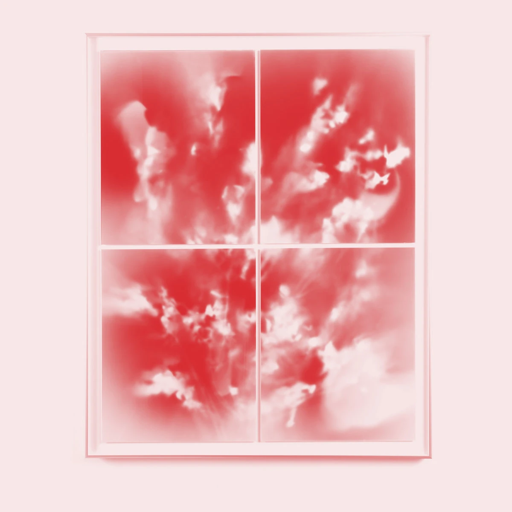

Sadie Powers — Souvenir
Sadie Powers combines vivid soundscapes with her main instrument, the bass, creating a mood that draws the listener deep in thought. The sad personal story behind the album (as described on her Bandcamp page) becomes audible.
The album is a well-crafted collage of improvisations, featuring four tracks ranging from 8:22 to 11:26 minutes. They carry the listener into a wonderful mood, and as a listener, you find yourself paying close attention to every single sound that form the background and occasionally push to the forefront. And in the middle of it all, a warm, soft bass gently swings through improvised fragments. Closing your eyes, you feel transported into one of those industrial halls where, on a Friday evening, experimental music is performed live on stage, and the audience sits captivated in rows of chairs, letting the sounds carry them away.
Around the halfway point, with the piece Rabbit Hour, things shift slightly—both the background and the foreground feel more composed, more dense. And after 40 minutes, the experimental concert in the industrial hall comes to an end. But the wonderful atmosphere stays with you for a while.